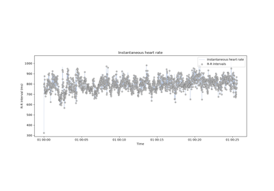
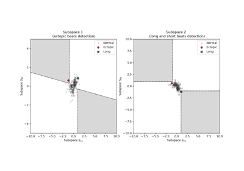
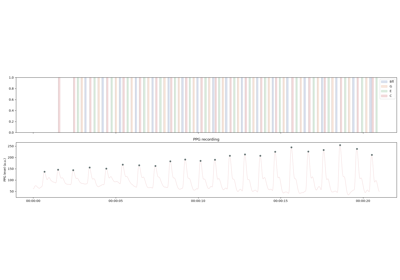

Example gallery#
This section demonstrates some of the basic functionality of systole.
Artefacts#

Detecting and correcting artefacts in peaks vector
Detecting and correcting artefacts in peaks vector
Detecting and correcting artefacts in RR time series
Detecting and correcting artefacts in RR time series
Plotting#

Plot subspaces to vivualize short/long and ectopic beats
Plot subspaces to vivualize short/long and ectopic beats
Recording#

Heartbeat Evoked Arpeggios (cardiac-contingent stimuli)
Heartbeat Evoked Arpeggios (cardiac-contingent stimuli)